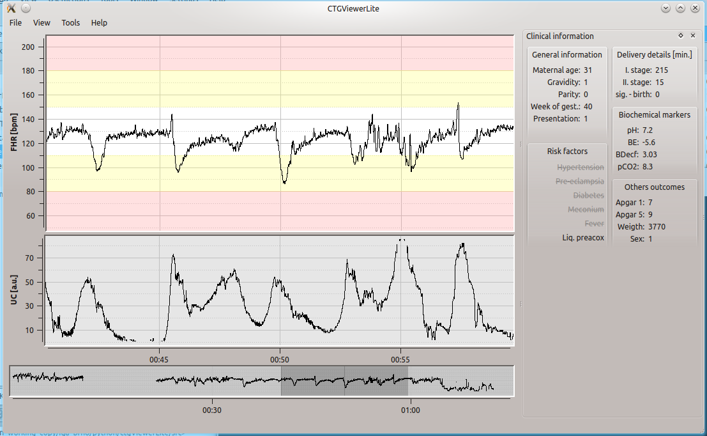
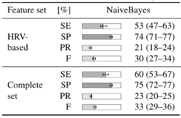
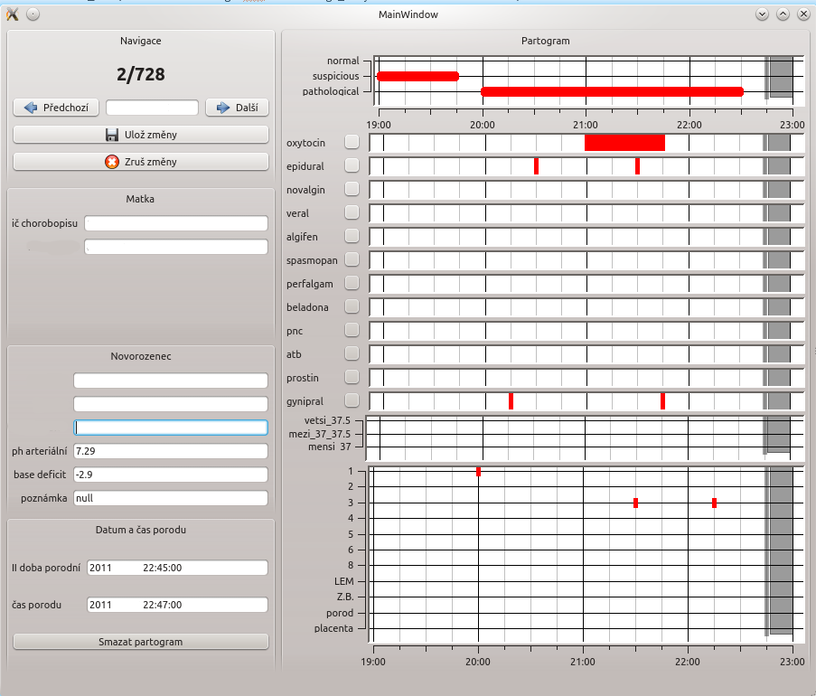

We used to have a simple suite (benchmark) to understand how FastAPI is internally serializing JSON/Pydantic data when it is returned. To handle large responses, we had to employ several workaround strategies. With pydantic v2 and its excellent performance, custom responses are no longer required. Checkout out the results.
Open access intrapartum CTG database (CTU-UHB database)
The database, from the Czech Technical University (CTU) in Prague and the University Hospital in Brno (UHB), contains 552 cardiotocography (CTG) recordings, which were carefully selected from 9164 recordings collected between 2010 and 2012 at UHB.
The CTGAnnotator was used to obtain annotation of the CTG recordings from nine expert-obstetricians. The CTGAnnotator presented the CTG trace in form of consecutive 30-minute windows together with basic clinical information. Each window was expected to be evaluated based on FIGO criteria by assigning it to one of the three classes (Normal/Suspicious/Pathological). All obstetricians working on delivery wards of six Obstetrics and Gynecology Departments of all the University Hospitals in the Czech Republic have been currently practicing delivery ward doctors with median experience of 15 years (minimum 10, maximum 33).
 The CTGViewer allows browsing of cardiotographic records from the CTG database (CTU-UHB database). Its purpose is to display a fetal heart rate and uterine contractions together with a clinical information without the need of Matlab.

{kind=link}
The TikZ package is interface to PGF macro package. It allows to produce
nice graphic plots in latex. The example below shows how to use this packages to produce a fancy table that is easily readable.
The values in table are in median with confidence intervals.
Source code with pdf examples: latex-tikz-table
PartogramCopy
 The PartogramCopy was used to obtain data from paper documentation. It is able to save information to relational database (SQLlite). The PartogramCopy can save the following data: labour outcome as measured by pH, BE, or BDecf, evaluation of fetal heart rate records (normal, suspicious, pathological), drugs administered, and progress of labour. The application is written in python with PyQt bindings and PyQwt library.
{kind=link}